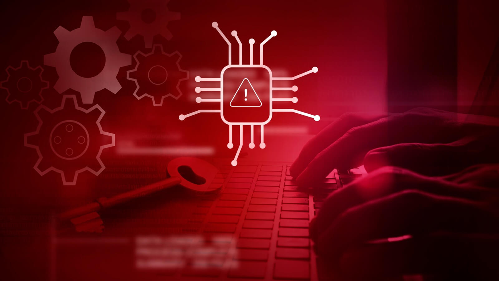
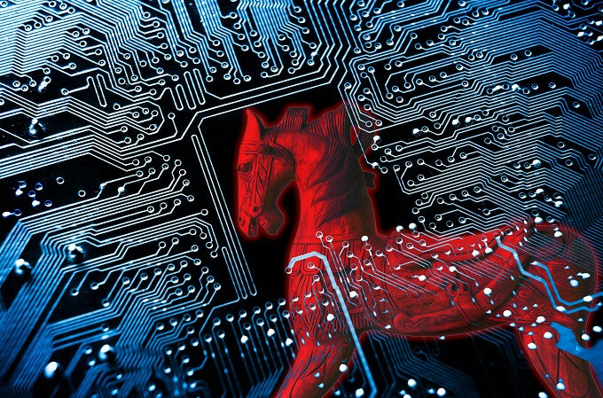

Protección contra Malware
El malware es cualquier software diseñado para dañar, explotar o infiltrarse en tu computadora o dispositivo móvil sin tu conocimiento. Aquí te explicamos más sobre los tipos más comunes de malware y cómo reconocerlos:
Virus:
¿Qué son?
Son programas que se replican y se propagan a otros archivos o programas en tu computadora.Cómo funcionan:
Se adjuntan a archivos ejecutables y se activan cuando abres esos archivos. Pueden borrar datos, corromper archivos o dañar el sistema operativo. Síntomas: Tu computadora se vuelve lenta, se bloquea o muestra mensajes de error inesperados.
Spyware:
¿Qué es?
Es software que espía tus actividades en línea y puede robar información personal, como contraseñas y datos de tarjetas de crédito.Cómo funciona:
Se instala en tu dispositivo sin tu conocimiento y monitorea tu comportamiento en línea, registrando las teclas que pulsas y los sitios web que visitas. Síntomas: Anuncios emergentes excesivos, cambios en la configuración de tu navegador y una disminución del rendimiento de tu dispositivo.Troyanos:
¿Qué son?
Son programas que se disfrazan de software legítimo pero tienen funciones maliciosas ocultas.Cómo funcionan:
Una vez instalados, permiten a los atacantes acceder y controlar tu computadora de forma remota, robando datos o instalando otros tipos de malware. Síntomas: Comportamiento extraño del sistema, como la instalación de programas no deseados y el acceso no autorizado a tus archivos.